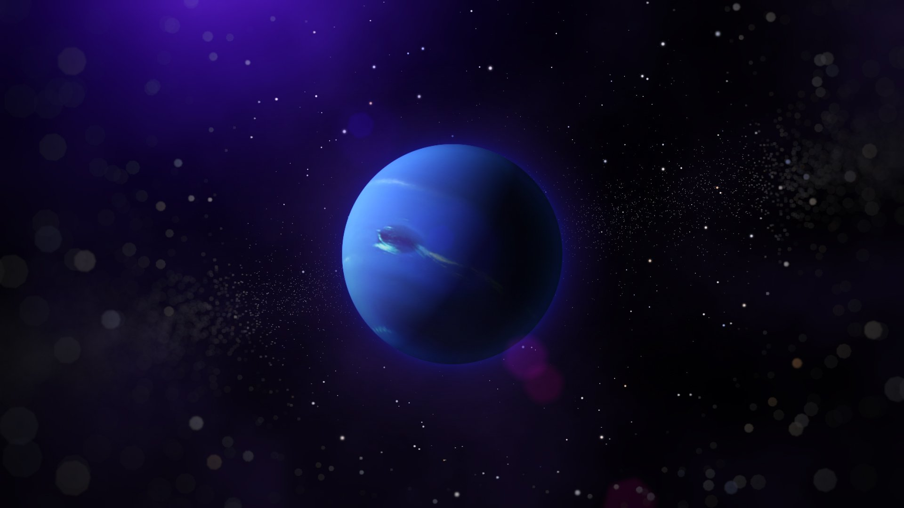

Нептун — восьмая и самая дальняя от Солнца планета Солнечной системы. Его масса превышает массу Земли в 17,2 раза и является третьей среди планет Солнечной системы, а по экваториальному диаметру Нептун занимает четвёртое место, превосходя Землю в 3,9 раза. Планета названа в честь Нептуна — римского бога морей.

Крупнейшие спутники планеты